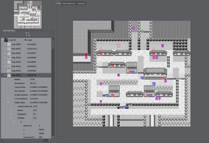
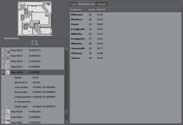
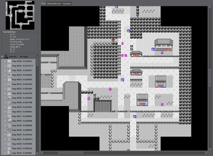

Pokanalysis
Pokanalysis analyses first generation Pokémon
ROMS… At least Red and
Blue…
US. ☺
It's a totally useless application (unless you are just
curious about the game) since you can't edit the ROM
with it. I insist on it: Pokanalysis is a
VIEWER, not an editor.
Also, you won't find any ROM here.
Screenshots



Current features
- Main game area (Kanto) with merged or split maps
- Houses, cave, etc. maps
- Entering maps by clicking on warps/doors
- Wild pokémons with their names and sprites
- Text of most of the signs
- Special items (hidden objects for example)
- Entities (people, trainers, items) and their default orientation
And also:
- A lot of bugs
- A lot of incomplete features
- A lot of missing features
- A lot of unsupported ROMS
Dependencies
- Python >= 2.5
- PyGTK
- CMake (build only)
- GCC (build only)
How to build & use
% tar -zxf pokanalysis-*.tar.gz
% cd pokanalysis-*
% mkdir build
% cd build
% cmake ..
% cd ..
% make -C build
% ./pokanalysis /path/to/your/pokemon/gb/rom.gb
Contact developer
The best way to contact me directly is to use jabber
(ubitux, on jabber.fr), or IRC (see you
on freenode).
Feel free to send patches, docs and kisses ♥
License
GPL v3.
TODO ideas
- Map names
- Special items text and type
- Support more text (entities, special signs, …)
- Trainers pokémons
- Pokémons information (stats, evolutions, …)
- More ROMS support (better addresses support)
- Collisions
- Search engine (wild pokémons, items, …)
- Better GUI (treeview autofocus, previous/next, …)
- Editor?
{kind=link}
{kind=link}
{kind=link}